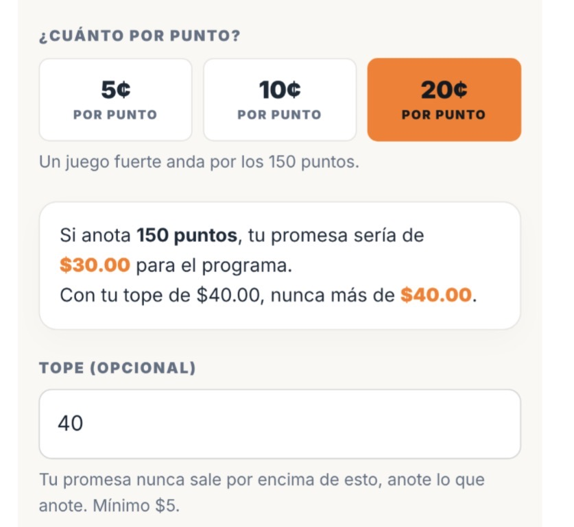

BEFORE IT OPENS
Players find padrinos
Each player sends his own link. Every padrino he finds raises what one of his points is worth.

Play it before you read another word.
No gym to book. No schedule to coordinate. No scores to enter.
Each player sends his own link. Every padrino he finds raises what one of his points is worth.

Four sets on a phone, at the court or at home. The game records every point as he plays.
Play the free demoEvery pledge is calculated and reported to the program. Each padrino gets one email with the points and their total, and the program is paid directly.
You run the event, the report is yours to print the moment it closes, and the licence is invoiced after that. One price per event — it does not move with how much you raise, how many players run, or how many padrinos they bring in. And if the event records no pledges at all, there is no invoice.
One price for the whole event, however many players take a run and however many padrinos each one brings. You know which step you are on before you start, and it does not move.
We manage the pledges.
You manage the proceeds.
Cada Punto Cuenta is strictly a pledge management software provider. Organizations independently manage all proceeds.
Set it up for free, pick your window, and see what the roster brings in.
Request Team RegistrationAre you a player? Your program has to run it — show your coach this page.